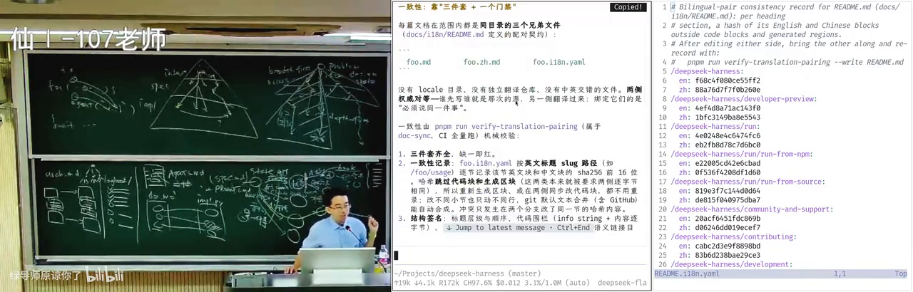
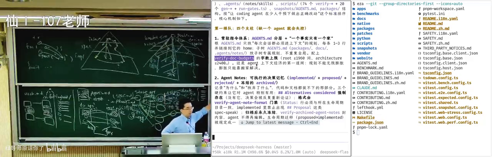

1 长任务也要算清使用预算
讲师把第二个实验引向 Agent-native 开发：让智能体（Agent，能根据要求调用工具并继续推进任务的 AI 执行者）参与更长、更复杂的工作。他举了自己的做法：把一个自己暂时不知道如何证明的复杂数学命题留作长任务，离开办公室前交给 Agent 继续尝试。这里的 token（模型处理输入和生成内容时计量用量的单位）消耗可能很高，讲师提醒这种任务甚至会用完一周额度；他会结合当天额度重置的时间安排运行。这个例子说明长任务仍有真实的计算成本，不代表证明最后已经成功。
他也把一些日常工作迁到转写为“Grog bot/grp boss”的个人 Agent：给孩子准备驾车时可以听的 podcast，推送 Morning Paper 和 GitHub 上值得关注的项目。这个产品名称无法唯一确认，因此这里只保留来源转写，不猜测具体服务。投屏可见 Master Bot、Morning Paper 和 Kid's Daily News 等标签。讲师称后台使用 Claude Code，也提到一个 Opus 模型版本；转写记作“s5.5”，但没有听音确认，不能当作已经核实的版本信息。他特别说明，论文推送采用自己反复调整过的提示词，直接让 AI 总结同一篇论文，结果可能不同。提示词磨合会影响输出内容，但这一例子并不证明自定义提示词在所有任务上都更好。
第二个实验因此不只是复刻个人助理，而是把有限算力更多用于问题求解和路线比较。实验仍允许从第一个实验的个人 Agent 中抽取一小部分能力；关键变化是让 Agent 不只处理邮件或查询个人资料，而是继续参与较长的研究和开发任务。
2 在有限算力下平衡广度与深度
长任务能力并不自动带来好的问题直觉。一个研究想法可以很合理，团队也能据此做出原型（用于试验想法和暴露问题的初步实现）、持续优化并得到实验结果；但合理不等于它就是设计空间（同一问题可以采用的多种方案范围）中的好选择。若一开始只沿一条路线不断深入，可能投入很多工作后才发现，另一个早期选择会产生更好的结果。
讲师用博士生训练作类比：学生可以围绕一个很窄、很深的问题工作，例如软件工程里某类 Python 代码补全问题。研究的价值不只在做完这个具体问题，也在练习如何从更大的设计空间找到合适方案。对应地，Agent loop（让模型逐轮执行、接收反馈并继续任务的循环）需要兼顾广度探索（先比较多条备选路线）与深度推进（沿一条路线继续实现和优化）：先用有限的浅层比较察看不同路线可能造成的差异，再把算力投入选定路线，做原型、优化和实验。实际任务未必每次都按同一种搜索程序进行；重点是不要把第一个可行想法误当成唯一选择。
graph TD
Q[研究或开发问题] -->|提出候选路线| A[路线甲]
Q -->|提出候选路线| B[路线乙]
Q -->|提出候选路线| C[路线丙]
A -->|浅层比较可能影响| D[比较方案]
B -->|浅层比较可能影响| D
C -->|浅层比较可能影响| D
D -->|有限算力下选定一条| E[实现原型]
E -->|继续深入| F[优化与实验]
F -->|结果显示方向不合适时再讨论| D
图示概括讲师提出的广度与深度取舍；箭头标明提出候选、比较、选择和继续验证的关系，回路表示发现方向不合适时可以重新讨论。依据 00:02:21–00:03:53、00:09:02–00:09:27 的讲解整理。
讲师把 Agent 较快沿一条路线推进的倾向，解释为强化学习（用奖励反馈调整模型行为的训练方法）中任务完成奖励的影响：如果模型因完成任务、尤其是更快完成而得到奖励，就可能在短暂比较后选一个可行方向继续做。他举 DeepSeek 的思维链（模型逐步展开的推理过程）为例：它有时会停下来想另一种可能，但遇到它认为太难的任务也会直接停下。这里是讲师对训练目标和个人使用体验的解释，课堂没有展示各模型的完整训练证据。
在人类和模型之间，探索的时间压力也不相同。讲师提醒研究生不要无限期停留在文献调研阶段，而应在时间有限时边做边学；只顾广度或只顾深度都可能浪费资源。Humanize 的课件标题为 “Humanize: Judgement Engineering for Agentic Coding”。讲师称该团队试过多种方式，认为让 GPT 与 Claude 互相 review（审查并挑出对方方案的问题）更有帮助：判断相近的参与者容易较快达成共识，而有不同偏见的模型可能把搜索引到不同分支。这是讲师转述的实践经验，不表示多模型互审必然找到最优解。
搜索也需要可用的知识基础。第一个实验里的个人知识库（供任务检索和参考的资料集合）可能包含作业、奖学金申请和简历；更深入的研究还可以加入论文、博客、GitHub 项目和书籍摘录。实验允许简化，也为开放探索留出空间。讲师鼓励学生至少亲自观察一次 Agent 在任务中的行动轨迹（Agent 为完成任务实际采取的步骤），因为只看成熟产品的最终界面，很难获得第一次看它如何实际推进工作的体会。
3 用讨论和原型保留设计选择
软件工程面对的一个难点，是人的注意力有限，但一个目标通常有许多种需求表达和实现方式。讲师把目标称为意图（intent，即想解决什么问题、达到什么目标），把细化后的要求和架构选择称为规格（spec，把目标细化成可讨论的要求与设计约束）。一个意图可以对应多种规格，一个规格也可以有多种实现（implementation）。这不是一条只会通向唯一结果的流水线：访谈、清单和与需求方沟通可以帮助澄清意图；之后再与有经验的架构师讨论数据库等设计选择，每一阶段都可能经过几轮讨论才收敛。
graph TD
I[待澄清的意图] -->|访谈 清单和需求沟通| S[较清楚的意图]
S -->|讨论不同要求与架构取舍| A[规格方案甲]
S -->|讨论另一种取舍| B[规格方案乙]
A -->|架构讨论后选择一种实现| X[实现方案甲]
A -->|同一规格也可能有另一实现| Y[实现方案乙]
B -->|架构讨论后选择一种实现| Z[实现方案丙]
图中一个意图可以收敛出不同规格，同一规格也可能有不同实现；箭头表示讨论、选择和细化，不表示必须按固定顺序一次完成。依据 00:05:54–00:07:42 的讲解整理。
讲师以是否采用事件溯源（event sourcing，即用事件记录状态如何变化的设计方式）为例，说明架构取舍会导向很不一样的方案。他提到一位转写为“pad”的开发者表示不使用 event sourcing，而采用另一种 functional design，并强调需要持久化一切。身份和术语仍未确认，因此这里保留的是讲师用来说明的设计差异，不把它认定为某个具体产品或规范。讲师指出这些取舍会影响可维护性和可观测性（从系统输出判断其内部运行情况的能力），还以 UML（用图形描述软件结构与行为的建模方式）说明，建模可以在项目早期约束讨论空间，帮助团队达成一致。IDE（用于编辑、运行和调试代码的开发工具）与 Git worktree（为同一仓库创建独立工作目录的 Git 功能）等工具则支持实际协作和版本管理。
AI 降低了在讨论过程中制作版本的成本。即使想法还没有完全想清，也可以让 AI 先做一个版本，随后构造典型用例（描述用户如何完成具体任务的使用场景）并评审：哪些地方变好了，哪些变坏了，预想之外的模块交互在哪里。真实实现可能暴露人们在纸面设计时没有想到的问题，例如用户增加之后系统会怎样、两个模块之间会出现什么新的交互。看到结果后再调整需求、继续讨论并生成下一版，比只在头脑中设想更容易发现差异。
讲师把这种能力描述为让 AI 承担员工、甚至团队的部分工作。如果需求能清楚拆成彼此独立的子系统，可以并行启动多个 Agent；他提到把一个转写为“TMARS”的窗口分成四份，同时监看四个 Agent，再多就跟不上输出速度。这个窗口名称和具体工具身份没有确认，四个也只是讲师对自己监工能力的描述，不是适用于所有人的并行数量建议。讲师还说，AI 输出速度有时会让人跟不上；但在自己仍能监工的范围内，可以更快探索不同方案，也能并行推进需求想法。实验同样不要求所有人做出完整产品：可以简化，也可以选择不做；但亲自看一次 Agent 的工作过程，才会有只看成品无法替代的观察经验。讲师还建议让 Agent 每天推送一个 GitHub 学习项目，花几分钟追问其中的技术栈，以积累技术经验和品位。
4 从工具描述到可工作的 Agent loop
讲师回顾早期 Coding Agent 时，提到 Devin，并把当时的讨论放在模型幻觉严重、可靠性仍受质疑的背景中；课堂提到当时还没有他所说的思维链模型（可逐步展开推理过程的模型）。这里是发展脉络的回顾，不能把相邻的年份直接当成 Devin 的发布时间，也不能把当时的宣传说法当成已验证的能力。
讲师用 ReAct（让模型在推理与行动之间交替、并自主调用工具的一类 Agent 思路）说明工具型 Agent；这里的 ReAct 不是前端 React 库。模型得到任务后，可以通过工具执行命令、查看结果，再根据结果决定下一步。讲师把“给足够好的模型一个 Bash（供模型通过命令行执行任务的工具）工具就能完成任意任务”作为思想实验，同时明确说当前模型还没有达到最优秀人类的通用能力，因此仍需要设计循环、边界和检查。
为了理解成熟工具做了什么，讲师建议先自己实现一个简单核心，再与成熟产品比较差距，逐步补上需要的能力。最小示例先描述可用工具：程序用 Python 对象表示工具，再序列化（把程序对象转换成可传输表示）为 JSON（用字段和值描述数据的文本格式）。其中列明工具类型（function）、名称、说明和参数；示例工具是 Bash，参数是要执行的 command。这个结构让模型知道自己可以请求什么操作、需要给出哪些参数。循环先把用户输入和已有工具结果组织成 messages（本轮模型可见的对话和工具结果记录），再请求模型。API（程序之间交换请求和结果的接口）可以帮忙解析模型返回的结构化工具调用（模型向程序提出要执行哪个工具及其参数的请求），但命令实际仍由 Agent 外层程序执行。
在讲解 API key 前，讲师提到一个转写为“PIAGENT 的奥斯”的名称，含义没有确认；他随后用一个宿舍场景提醒学生保护密钥：如果离开时没有锁屏，室友可能看到终端中的 API key 并拍下来。这个例子说明终端里可见的凭证也需要保护，不据模糊名称补写认证流程。
graph TD
U[读取用户输入] -->|组成消息并请求模型| M[模型返回回复]
M -->|没有工具调用| R[输出文本回复]
M -->|请求调用 Bash| P[读取 command 参数]
P -->|交给本地程序执行| B[运行命令]
B -->|附上调用 ID 和输出| T[把工具结果放回消息]
T -->|继续请求模型| M
图示是课堂中约 150 行 Agent 的核心调用循环：模型提出工具请求，外层程序运行命令，再把带调用 ID 的结果交回模型；箭头表示实际执行与结果回传。依据 00:16:45–00:19:11 的讲解整理。
工具执行还要考虑环境差异。讲师在最小示例里把命令超时（等待命令结束的时间上限）写死；但 Agent 对 GitHub 访问速度的预期可能与用户所在网络环境不同，合理的 clone 操作也可能因时间限制不合适而被杀掉。他用自己在不同网络环境下观察到的速度差异说明，人和模型都可能过度适应熟悉环境。单次原型可以先暴露这种问题，成熟产品则需要考虑环境差异和后续调整，不能把一个固定超时值当成通用答案。
同一个简单 Agent 后来被要求生成一张“生成式软件工程”简介 HTML 卡片并在浏览器打开。讲师称它大约 150 行，外面再加约五行脚本，而且只提供 Bash 工具。这仍足以完成一个有用任务，说明起步所需的核心可能很小；与此同时，后续演示也会显示，模型自选的检查方式和页面行为未必正好符合用户期待。
5 Agent 运行框架管理行为，外层循环管理状态
在简介卡片演示中，Agent 探测环境、反复验证、打开两个浏览器，并在截图检查后询问讲师是否满意；但用户可能希望它继续完成任务，而不是停下来询问。讲师称当时使用的是自己提供提示词的白板模型，并猜测项目已有内容可能影响了模型的样式偏好，但没有确定原因。这个例子说明模型能自行探索，并不等于它的行为自然符合任务目标。
Harness（管理模型本轮可参考的信息、工具权限和执行过程的运行框架）负责把模型可以采取的动作限制在设计者认为合适的范围。简单的 Ralph loop（把同一任务提示交给模型反复运行、逐轮检查修改的外层循环）只是其中一种形式；更复杂的 harness 可以通过 TypeScript 脚本里的循环和自然语言任务模板派发子 Agent（由主执行者派出的另一个任务执行者），把循环变量或计算结果填进模板，再启动异步（启动任务后可先做其他事、之后等待结果）调用。讲师表示可以等待子 Agent 完成，但当场不确定具体等待语法；因此能确认的是编排思路，不是某个可复制的 API。
讲师解释 Ralph 这个名字借自《辛普森一家》中不放弃的角色。实践中，同一任务提示可以反复交给 Claude 的命令行运行入口，每轮检查并修改，直到不能继续改进。提示词可以保持不变，但文件和工作区（保存项目文件与当前开发结果的目录环境）会随前几轮改变。它是一种线性管理搜索的方法，不是唯一或最佳的 harness 设计；“直到无法改进”也不能代替可验证的停止条件。
长任务还会碰到上下文（模型本轮能参考的任务、对话与项目资料）限制。讲师描述自己的 Codex 使用体验：任务继续推进时，会话可能触发 上下文压缩（把过长会话记录压成较短记录以继续任务，讲师称之为 compact）；他观察到压缩后模型有一段时间更容易做错，重新加载足够上下文后可能恢复，继续运行又可能再次压缩。他也提到当时有约 500K 上下文的更新，但版本未确认，这个数字是课堂时的陈述，不是当前规格。外层循环把一项长任务分成多轮，并通过状态记录接续，目的是减轻单次会话难以一直保留进展的问题。
讲师把工作区看成当前系统状态：开始时可能只有一个规格文件；每轮操作使文件和项目进入下一状态，必要时可用 Git 提交（为当前代码变更保存一个版本记录）保存版本。同一状态可以选择让 GPT 继续实现、让 Claude 做审查，或交给 DeepSeek 执行其他工作。这属于非确定选择（同一状态下可以选择不同动作与后续路径）：概念上有多个可选分支，但一次运行会选择其中一条路径，不代表所有动作都要同时发生。
graph TD
S[当前工作区状态] -->|可选动作：继续实现| G[GPT 处理]
S -->|可选动作：审查| C[Claude review]
S -->|可选动作：执行另一任务| D[DeepSeek 处理]
G -->|结果经检查后写回| N[下一工作区状态]
C -->|审查意见影响后续选择| N
D -->|结果经检查后写回| N
N -->|可保存版本并继续选择| S
图中的分支表示在同一状态上选择不同动作，箭头表示动作结果、审查意见和版本状态如何影响后续；这些分支不是必须并行执行。依据 00:27:20–00:29:56 的讲解整理。
如果任务能拆成边界清楚的独立模块，才适合把并行作为一种具体选择。讲师举例从同一状态分别对模块 A 和 B 做重构（调整代码结构以改善设计和维护方式），在独立工作区中推进，之后再合并为一个提交。课堂没有展开冲突处理等完整协作规范，因此这个例子只能说明清楚拆分后的并行可能性。
graph TD
S[同一基准状态] -->|分配独立模块| A[工作区 A：重构模块 A]
S -->|分配独立模块| B[工作区 B：重构模块 B]
A -->|完成后合并| M[合并为一个提交]
B -->|完成后合并| M
图示表达两个独立模块可并行推进并在完成后合并；箭头表示任务分派和后续合并，不覆盖未讲解的冲突处理。依据 00:31:00–00:31:54 的讲解整理。
在讲师举的另一种可选策略中，可以每周做一次架构 review，检查项目是否积累了低质量的 AI 生成代码；发现问题时，先移除相关实现、提交这次改动，再让 Agent 按更好的架构重做。这是偏强硬的可选重构路径，不能脱离情境普遍套用。讲师用博士生导师与学生的关系作对比：旧的低质量代码进入模型上下文后，模型可能因遵循“不要动用户已有东西”的倾向而继续扶旧架构；导师与学生之间则可能有“老师是为学生好”的默契，导师可以要求推倒重来。另一方面，重构可能改变现有行为；若线上服务正在故障，用户可能真的只想尽快恢复，此时先按要求修补也有现实理由。提示词或外层循环可以安排何时广泛探索、何时深入实现，但没有适用于所有项目的固定选择。
讲师还描述了模型和循环互相推进的关系：外层循环把可处理的任务延长，模型厂商提升单次会话能力后，用户又可以在新能力上继续套用循环。他把这种趋势比作“左脚踩右脚”继续向上。由此得出的博士生比较是讲师的观点：如果导师已经决定研究方向，只按论文、研究成果和项目产出衡量，某些任务上调教好的 prompt 和 loop 可能更有效；但他也明确认为，把不会的人培养成会的人依然重要。产出效率与人才培养是两个不同的目标。
6 把自动检查接入 Agent 的逐步推进
课堂中的 Ralph 示例要求每轮先检查当前状态，只推进一个明确步骤，再验证并评估结果。未完成时，把当前状态和下一步写入文件，交给下一轮继续；只有模型认为整体任务已完成，才输出指定完成标记，外层脚本看到该标记后才停止。否则就会继续循环。这个最小示例信任模型对“完成”的判断，因此标记本身不是完成证据，必须再配合检查。
演示也说明了复核为何重要。讲师让 Agent 调研世界上最好的编程语言，环境访问 Google 时超时；任务可以阶段性总结、把状态写下来，再继续尝试。它还尝试下载论文，最后用一句话回答“不存在绝对最好的语言”。同一个模型做名片卡片时，直接生成的版本更花哨，有玻璃效果和模拟终端，但邮箱及组织信息错误；循环版本更朴素，讲师称其邮箱、计算机学院副教授身份和 GitHub 信息正确。讲师明确提醒结果有随机性，也与 prompt 有关，因此一次演示不能证明 loop 永远更好。两项任务都说明：至少要检查事实和实际结果，不能只看界面是否好看或模型是否声称完成。
讲师说，当时还无法判断 Codex、Claude Code 或 Pi 哪种设计更好；Pi 生态里有不止一种子 Agent 插件，具体哪种更好仍不清楚，整体设计空间还没有定论。对于新模型，他建议拿自己熟悉的任务做背靠背对比（用相同任务比较两种配置的结果）。过去适用的系统提示词和 Skill（按任务加载、为一类任务提供可复用操作指导的说明），换到模型新版本后可能不再合适；临时移除这些配置，结果甚至可能更好。网上模板可以复用，但长期磨合才能了解某个提示词什么时候值得信任、什么时候应让模型自己处理。这是受控比较建议，不是要求永久删除已有配置。
讲师把它作为前提：Agent 训练可能还不够好，或当前上下文可能使它发生漂移（执行方向逐渐偏离原任务）。每轮只做小幅状态迁移（从当前工作状态进入下一状态）并停下来检查，可在一定程度上减少 Agent 偏离任务的风险。检查可以由另一个 Agent 或模型 review，也可以运行测试与检查脚本；如果检查不通过，就不接受这一轮的结果，先修复发现的问题，再继续推进。这种做法不是新发明，而是软件工程中常见的开发控制思路。
讲师用“机器永远是对的、未测代码永远是错的”两条课堂公理提醒开发者先检查自己的变更。这是排查纪律，不表示机器和外部系统绝不出错。人的自信会让小改动看起来“肯定没事”：改一行文档、把循环起点从一改成零，或只看单元测试（单独检查较小程序部分行为的测试）和 OJ（online judge，提交程序后自动判题的在线系统）样例通过，都不足以证明生产系统安全。口头叮嘱开发者做好测试也不可靠；在反馈成本很低时，人可能会因为投机而先提交。因此检查应写成脚本并自动触发，减少对个人记忆和自觉的依赖。讲师还以 GitHub 的运行配置和脚本为例，说明把门控接入自动触发可减少依赖开发者记得手动运行；字幕将位置转写为“点 GitHub”，这里不据此推定具体文件路径。
持续集成（CI）会在代码变化后自动运行构建（把源码编译或打包成可运行产物）和检查；持续交付（CD）按规则推进经过验证的结果。两者合称 CI/CD（把变更检查、集成和后续交付接入自动流程的实践），可以从这个简单原则理解：开发过程中的适当步骤都可以触发检查；检查失败就停下修复，满足要求后才进入下一步。检查可自动运行，检查足够且符合发布规则时，可以集成到主干、构建、测试、验证，最后由人决定是否上线，或在出现 release tag（标记待发布版本的标签）时自动部署。自动门禁（满足检查条件才允许流程继续的控制点）降低了漏跑检查的机会，但“通过检查”不等于所有潜在问题都已消失。
graph TD
D[开发或提交步骤] -->|触发自动检查| C{检查通过吗}
C -->|否：拒绝本轮迁移| F[修复发现的问题]
F -->|修复后重新检查| C
C -->|是：进入后续流程| I[集成 构建与验证]
I -->|需要人工决定| H[由人决定是否上线]
I -->|满足发布标签规则| R[自动发布]
图示概括课堂所讲的门禁关系：失败时退回修复；通过后才进入集成、验证和条件式发布。箭头表示检查结果和后续条件，不代表自动检查能证明没有任何错误。依据 00:43:36–00:47:19 的讲解整理。
复杂性还来自 CI/CD 的集成环境。检查可能在容器（提供相对隔离运行环境的封装方式）中执行，而不是依赖开发者自己的电脑；流程要完成构建和测试，再把结果同步到团队或企业页面。因此学生觉得它复杂，往往是因为还要把检查接进真实开发流程，不只是理解“检查通过才能继续”的理念。
事件 hook（在某个事件发生前后自动触发动作的挂钩）可以连接这些流程。commit、push、pull request（请求审查并合并一组代码变更的流程）、合并或受保护分支（对进入分支设置额外规则的分支）等事件都可能触发相应动作；具体系统的 hook 能否阻止迁移，要看它的配置能力。讲师还举了自己的提醒声音：Agent 完成输出、需要他输入时播放声音。他曾遇到声音提醒失败，后来修好，说明 hook 也可以只是通知，不一定是阻断式门禁。
过去，GitHub Actions 等工作流配置需要手写较复杂的 DSL（面向特定配置任务的语言）；现在可以让大语言模型代写配置，但人仍须知道在什么状态变化时应该检查或通知什么。另一个更近的检查点是本地 pre-commit（Git 保存提交前自动运行的检查），例如要求先编译或运行 Lint（不运行程序、通过静态分析发现代码问题的检查）。Lint 可检查格式、空格和部分代码规范；它是基本门槛之一，具体规则应与项目要求相配。
6.1 检查要跟着提交、合并和发布事件走
这种持续集成流程让规则不只依赖开发者记得手动运行。讲师把 CI 的 first principle 概括为“开发者不可信”，并认为 Agent 尤其需要门禁：大语言模型的思路与人不同，人与 Agent 可能不对齐。这是他解释为何要自动检查的工程观点，不是说每个 Agent 每次都会出错。讲师举了云端算力的课堂例子：学校容器和 GitHub Actions 都有可利用的免费算力资源；学校容器可能要排队、运行较慢。他当时还以 GitHub Actions 每月约 2000 分钟的 CPU 资源为例。这个数值是课堂观察，不能当作当前账户额度或所有项目的保证。
他还设想一种事件驱动的云端 Agent 循环：push 触发 Claude Code，Agent 修改仓库并提交，新提交再触发后续 hook。这样的循环可以运行，但要安排好阶段衔接和触发条件；若两个流程互相等待或重复触发，仍可能失败。讲师不确定订阅能否在这类环境使用，只提出某些任务可能改走 API。这里的重点是先想清楚不同阶段要跑什么：lint、单元测试、集成测试，或更长时间的模糊测试，而不是因为有自动化就把所有检查塞进每次提交。
pre-commit、post-commit、pre-push 和 pre-merge 分别把检查放在本地提交、提交后、推送前或合并前。讲师回顾说，rough loop 把 workspace 状态作为循环状态，可借助 Git 记录；每次选择一个 action 前进一步，再检查结果。规则可放在不同事件上，检查不通过就先修复。
6.2 Agent 会放大代码和文档之间的维护债务
讲师举例说，Agent 可能一次生成约 20K 的长文档，还把自己的思考过程或循环里遇到的问题写进去；对读者来说，这类材料很快会变成难以检索的细节。相较之下，若代码已经能解释自身行为，重复注释未必有价值。问题在于 doc.md 和 implementation.py 可能描述同一接口或规则，但普通仓库不会自动记住这层关系。
如果后来换了 Agent、上下文被压缩，或只改了实现文件，另一个执行者可能不知道要同步文档。版本继续变化后，文档与代码就会分叉：读者不知道该信哪一份，细节越多，人工维护成本越高。讲师把这种难读、难维护的自动生成内容称为 AI slop（大量堆积、却难以可靠维护的生成内容）。他还观察到，Agent 有时会写出人难以阅读、却看似确信自己能够维护的代码；也可能在枝节上过度用力，却忽略设计空间里更重要的选择；做网页时反复使用浏览器工具查看页面，也可能把截图和工具输出持续留在主上下文。讲师提到一种做法：让子 Agent 执行视觉核验，只把简短摘要带回来，减少无关材料堆积。这是课堂举例，不是普遍性能结论。
为说明“更强”不等于“人可以不再管理”，讲师引用一则帖子，把超级智能与人类、人与狗作类比：狗未必理解人类如何创造世界，却能生活在其中；帖子提到约 10 亿只狗。这个类比不是工程证据。讲师随即强调，今天仍不能把 AI 当成神、交付任务后就不管；如果人和 AI 要共同维护项目，就得挡住不可读代码和膨胀文档不断累积，否则人可能连要改的位置都找不到。
6.3 把可判定的要求变成失败反馈
讲师用文档长度说明 CI 如何约束 Agent：示例规则把文档限制在 1000 字以内，超出就让 CI 失败、不能合入主分支；类似检查也可以放在本地 pre-commit，让 Agent 更早看到失败结果。Agent 能读取报错，再回看 README.md 或 AGENTS.md（仓库中说明项目规则与工作方式的文件）中的约束并修改。但规则只覆盖写明并执行的条件；把提醒写在文件里，不代表 Agent 在上下文变大后始终会遵守。
同一段随后又提到另一个 1600 字的 README/AGENTS 示例。这是课堂里的不同规则示例，不能合成一个通用默认值。讲师还用“100 万上下文”和“10 万行以上项目”说明，即使上下文容量很大，注意力也可能随着代码和材料增长而分散。它们是课堂用来解释规模压力的数字，不是对所有模型的上下文规格或能力保证。
graph TD
A[实现文件被修改] -->|未同步相关说明| B[文档仍保留旧内容]
B --> C[维护者难以判断哪份可信]
D[明确的长度或格式规则] -->|作为可判定检查| E[本地 hook 或 CI]
E -->|失败结果反馈给 Agent| F[修正后再提交]
图注：图概括“隐含文档关系会漂移”与“把明确要求变成门禁”的两条课堂论证；箭头分别表示未同步的结果和检查失败后的反馈，不表示长度规则本身能发现所有文档语义错误。依据 00:53:58–00:54:46、00:57:34–00:58:25。
7. Agent-native 开发：人设计环境、约束与验证
7.1 Harness engineering 把人的工作转向建好运行环境
Harness engineering（为 Agent 建立运行环境、约束、反馈和验证机制的工程实践）是讲师引用的 OpenAI 文章；完整标题《Harness engineering: leveraging Codex in an agent-first world》依据官方页面核验，并非声称课堂字幕逐字读出了副标题。文章讨论从空 Git 仓库开始、由 Agent 完成代码工作的实验。OpenAI 的原文并没有把“零手写代码”解释成“人不再参与”：讲师也强调，仍需由人定义工作流程、环境边界和质量反馈。
他以 Claude Code 的 source map（可把打包后的代码映回原始源码的映射文件）泄露为例，认为这类敏感文件应进入发布前的门禁；他还举出每次 push 前检查明文源码和 API key 是否意外泄露的课堂示例。这是讲师对一次泄露及其工程缺口的判断，检查项也是课堂建议；不能据此推出项目内部 CI 实际如何配置。讲师还转述文章提及团队仍在摸索长期维护方式；他随后说到的“每周 Agent review”在已核对的文章中未能找到对应原文，因此这里只记录为课堂转述，不能写成 OpenAI 已确认的固定制度。
7.2 检查按 PR、主干和发布分层
讲师展示 Codex 相关仓库中的 CI 配置，并将它概括为三层：拉取请求（PR，请求审查并合并一组代码变更）先跑较快的门禁；进入 main（项目主干分支）后执行更完整的认证与测试；发布时再打标签。基础检查包括格式和拼写、文件或函数过大等 bad smell（提示设计或维护问题的可疑迹象），以及依赖规则；讲师还提到 Cargo 等 Rust 工具。对于 main 上是否具体运行了某组单元测试，他使用的是“应该”等推断措辞，所以这里保留为课堂解释，不声称逐个工作流都已实跑。
graph TD
PR[提交 PR] -->|触发较快检查| FAST[快速门禁]
MAIN[变更进入 main] -->|触发更完整验证| FULL[全量认证与测试]
TAG[创建发布标签] -->|触发发布阶段| RELEASE[打包或发布]
图注：三条路径对应课堂对 PR、主干和发布的分层说明；箭头表示各自的触发关系，不表示 PR 必然自动合并。依据 01:01:37–01:02:57。
7.3 公开配置不能证明内部治理全貌
讲师认为，若一个要长期维护的 Agent-native 项目只有公开看到的 lint 和测试门禁，项目很难一直保持可维护；他据此推测 Codex 背后还有更完整的内部约束和架构审查。这个推测来自他对项目状态与文章内容的判断，不是内部系统证据。类似地，他对“每周 Agent review”的转述也不能扩写成已核实的内部运行频率。读公开规则时，要分清展示出来的门禁、讲师的推断，以及未公开而无法确认的机制。
8. 多 Agent 协作需要协调，也需要可见的项目状态
8.1 并行 Agent 可能互相覆盖改动
讲师引用 Anthropic 的 16-Agent 编译器案例：多个 Agent 在尝试编译 Linux 的阶段碰到同一个 bug，重复修复还覆盖了彼此的改动。Agent 数量增加并不自动等于有效并行；如果任务共享同一处代码或依赖关系，冲突可能抵消并行收益。Anthropic 的案例明确说明原实验没有使用 orchestration agent（负责协调多个 Agent 任务的调度 Agent）。讲师提出可以用调度（分配任务并协调多个执行者进展）Agent 汇总进展、协同任务，这是他的工程建议，不是 Anthropic 实验采用过的办法。
8.2 架构图和任务记录让项目状态可见
讲师随后介绍自己未具名项目的做法：architecture.md 可以生成项目架构图，log book（记录计划、任务与状态的工作日志）记录 task 及其完成或 ongoing 状态；他称系统接入了 GitLab CI 和 dashboard（汇总当前任务与进展的看板）。看板把正在进行的任务显示在相应模块附近，让负责人看到哪些 Agent 在哪里工作，以及估算的进度百分比。讲师认为，这让总架构师更容易掌握几位学生及其 Agent 的整体进展，并据此预估一小时或一天后项目可能到什么状态、是否需要调整。
这些百分比是讲师描述中的估算辅助，不是准确工时或完成时间承诺。此例属于讲师自己的项目；它与后面介绍的 DeepSeek Harness 文件组织不是同一个系统。
graph TD
A[architecture.md] -->|生成模块结构| B[架构图]
C[log book] -->|记录任务与状态| D[任务看板]
B -->|提供模块位置| D
D -->|显示运行 Agent 和估算进度| E[负责人查看并调整]
图注：箭头表示讲师所述的生成、记录和展示关系；看板显示的是估算状态，依据 01:04:40–01:06:16。
8.3 主 Agent 自动拆任务仍是讲师准备尝试的方向
讲师还提出一种未来设想：把整体方向交给一个 master agent，由它自动建立多个 log book 任务，再挂到架构图上。他明确说自己“还不太敢”，只是想尝试；转写中的 grc bot 身份也未确认。因此应把这段理解为自主协调的探索方向，不是已经运行的全自动管理系统。
9. DeepSeek Harness：让双语文档成为成对维护的工程关系
9.1 中文阅读效率与国际协作之间的取舍
讲师把 DeepSeek Harness 评价为 Agent-native 开发的标杆项目，并说自己克隆后第一感觉是奇怪，因为项目组织方式与其他项目不同；这是他的观察。他还说，自己作为中文母语者，读中文可能比读英文快一倍，能更快浏览大量文档、定位要点。这是他的个人阅读体验。若项目面向国际读者，中文和英文文档都要维护；在文档很多、频繁修改时，两种语言很容易失去一致性。讲师还指着文档中的交叉引用说，他当时检查时没有发现失效链接；这是课堂观察，不代表本稿已逐条验证该仓库所有链接。
演示主体需要按画面时间区分：01:07:30 的屏幕仍是 Codex 仓库清单；稍后 01:11:30 和 01:22:28 的画面明确显示 /Projects/deepseek-harness。因此，下文的双语文件配对和预算规则归于后面的 DeepSeek Harness 展示，不能由前一帧倒推。

双语文档配对示例字幕对照 · 在 B 站打开 (01:11:30)
9.2 三件套记录配对关系，检查不替代翻译审阅
在课堂所示的目录组织中，同一篇文档由英文 Markdown、中文 Markdown 和 i18n.yaml 三个同目录文件组成，三者形成配对契约（规定对应的双语文档需要同步维护的约定）。两种语言地位对等：某次编辑可以先从任一侧开始，再把对应修改翻译到另一侧。i18n.yaml 记录两侧的 Git blob 哈希（hash，用于识别内容版本的摘要值）；结合 Git 历史，可以判断哪侧发生了变化、另一侧是否仍对应旧版本。发现不一致后，Agent 按差异补丁（只修改与本次变更对应的部分）的思路补上另一份文档对应部分，而不是重新翻译整篇。
verify-translation-pairing 把配对要求纳入自动检查。哈希能标记内容变化和版本不匹配，却不能证明源文说得对，也不能证明翻译语义正确；仍需人检查表达与含义。课堂展示的是当时的文件和版本思路。核对官方仓库时，现行记录已演变为分节 hash；这里保留课堂所示的 Git blob 版本描述，不用新机制替换课堂内容。
graph TD
EN[英文 Markdown] -->|记录版本 hash| META[i18n.yaml]
ZH[中文 Markdown] -->|记录版本 hash| META
EN -->|内容互为对照| ZH
META -->|结合 Git 历史识别变化| DIFF[定位较新的差异]
DIFF -->|只补对应部分| PATCH[修订另一侧]
PATCH -->|检查配对规则| GATE[verify-translation-pairing]
GATE -->|仍需人工判断语义| REVIEW[翻译审阅]
图注：箭头分别表示登记版本、识别变更方向、按差异修订及后续检查；检查通过并不等同于语义正确。依据 01:10:44–01:13:06。
9.3 IDE 视图可以隐藏不常读的配对文件
这种三文件组织让目录看起来不如单语文档清爽。讲师的建议是用 IDE 配置隐藏 i18n.yaml 和当前读者不常读的语言文件，让中文读者主要看中文、英文读者主要看英文；底层配对关系仍留在仓库里。它体现的是呈现视图与真实文件关系可以不同，而不是把另一侧删掉。
9.4 写作规范按需加载，术语规则需要控制误报
讲师查看 style-samples 等文档，把它们当作可校准的写作规范；这类样例有助于项目在文档量很大时维持可读性，但讲师也指出，让人长期维护大量规范需要投入。若把所有 specification 常驻在 AGENTS.md，规则会越来越多；即使按课堂说的“100 万上下文”，也可能装不下或分散注意力。因此 DeepSeek Harness 把文档规范放在需要翻译或写文档时才读取的位置，采用渐进式披露（需要某类任务时再加载对应细则）。
术语表（约定同一概念应使用哪些名称和译法）文档 terminology 用于统一中英文术语。讲师举了按段落或小节比较英文术语和中文译法出现次数的设想，例如要求 “AI” 与“人工智能”大致匹配，并讨论百分比及正负 2–3 左右的容差。他同时提醒规则可能过严，必须调整边界，避免误判本来合格的内容。频次规则只能筛查可计数差异，不能替代语义检查；这些是讲师讨论的阈值示例，不能说成 DeepSeek Harness 已部署的规则。
9.5 Git 历史展示了规范逐步形成
讲师回看项目历史时提到，仓库在 2026 年 6 月 10 日晚约 11 点从空仓库开始；6 月 25 日先出现术语约定；7 月开始加入配对契约，7 月 3 日讨论两种语言的对等权威，并把一致性要求纳入自动化。他点到 turtle、张子雅、崔天翼等名字；看到团队先约定术语、随后再加入配对机制，讲师据此认为这些开发者有经验。讲师没有确定最初设计受哪个项目启发。日期和人物是课堂回看与转写内容，本稿不据此补写作者身份或额外的 Git 历史结论。
讲师还用 Python docstring（写在代码中的说明字符串）、Javadoc（Java 的文档注释格式）和 Doxygen（从约定格式注释生成文档的工具）作类比：用规定的注释语法生成文档或 API reference，可以减少代码与说明之间的重复维护。但“百分之百一致”应理解为文档从指定源码关系生成；生成流程仍不能证明注释本身描述正确。
10. 分层规则、人工评审与按变更选择检查
10.1 文档预算与项目内记录约束
讲师把 DeepSeek Harness 分层的 AGENTS.md 描述为常驻指令体系，并说它配合 verify-doc-budgets 检查文档预算，防止文档无限堆积。课上展示的数字是根目录 AGENTS.md 不超过 1960 个 word、architecture 文档不超过 2400 个 word；官方预算脚本按空白分隔的词项计数，不是 1960/2400 个中文字，也不是“次”。这是该仓库的具体规则，不是所有项目文档的通用标准。
课堂画面还列出 Agent Notes（保存提议、决定和实施依据的项目记录）中的 implemented、proposed、rejected 和 archive 等类别，用来区分已实施、提议、被拒绝及存档记录。类别的并列不表示每条记录都必须按固定顺序迁移。讲师随后把它与自己的 log book 区分开：他自己的记录带状态并接入 CI；前面他在介绍自己项目时提到 GitLab CI 和 dashboard，后面又说 log book 与 GitHub CI 集成，课堂没有解释两者的关系，因此不能合并成一套确定的平台架构。他还推测 DeepSeek Harness 可能没有 dashboard，或许认为并非必要；这只是讲师对项目选择的猜测。

分层规则与 Agent Notes 示例字幕对照 · 在 B 站打开 (01:22:28)
图注：截图显示分层 AGENTS.md、Agent Notes 分类和 1960/2400 的预算显示；来源：视频 01:22:28 截帧。
10.2 聊天界面也在变化
讲师观察到，当时的 ChatGPT 开始生成动态 UI 组件和 HTML 小卡片，并把图片嵌进文字流程，而不是把图片都堆在前面；他认为这样读起来更舒服。他据此预测 Web UI 可能成为主流，同时提到手机界面可能更难处理。这是讲师在课上的产品观察与预测，不等于已经在所有产品和设备上普遍实现。
10.3 工程评审同时依赖自动检查和人的判断
讲师认为，有基本工程判断力的人可以借助 AI 更快理解陌生项目，但仍要知道什么做得好、自己是否见过类似做法。他展示的评审包括本地自证、CI 门禁和人工评审；新增文案还要做语义评审（检查表达的实际含义与依据是否正确），页面上也有分数。具体评分体系没有在原文中展开，所以这里只保留评审的组成，不推测分数含义。
文档与代码一致性可以通过更具体的检查来约束。例如，课堂示例会检查文档里的 interface（描述数据或对象应具备哪些成员的类型接口）是否逐字符出现在指定源码文件中，以便发现一侧改了接口、另一侧没更新。这个办法能验证字面片段是否对应，不能自动理解整个设计意图。
10.4 讲师自有项目把代码块和检查规则接起来
讲师转而介绍自己团队的扩展：文档代码围栏（Markdown 中标记代码块起止的写法）可以带简短的执行语义，声明片段要出现在哪个位置、以什么形式关联其他内容，再由轻量检查验证。他将其描述为在 Markdown fenced code block 基础上的扩展；原文没有给出完整语法，不能补写成可复制的代码规范。
讲师列出的自有项目检查还包括 doc-sync、static、coverage、snapshot、翻译配对、应用入口及 type-equivalent 等。他把 skill 用来说明“怎么做”，把项目任务说明与代码检查规则分开。多种小规则合在一起可以减少漂移，但每条门禁只负责自己明确编码的条件，仍需人工审阅语义和设计。
10.5 只对受影响范围运行检查
讲师说，提交代码之前可能要跑不少门禁；如果他只修改 log book、没有改代码，就不需要重复运行全部代码 CI；他还提到 plan mode（先讨论目标与验收范围的计划阶段），在确定做什么、做到什么程度后再交给 Agent 执行。检查应跟变更范围对应：纯任务记录变化与接口、类型或中英文配对变化不是同一种检查需求；文档或代码块关系变化仍可能触发其专用门禁。这个原则不是“所有文档修改都跳过 CI”，而是先识别改了什么，再运行覆盖该关系的检查。
11. 维护项目还需要重构、经验和尝试机会
11.1 门禁不能代替架构重构
讲师回顾 DeepSeek Harness 的工程做法时认为，这些做法来自真实开发和失败经验，很难只坐在课堂里凭空想全；如果思路一直沿当前上下文往下推，人可能看不到尚未发现的更大设计空间，还可以朝另一个方向探索。
讲师提醒，即使有规则和持续清理，项目仍可能有一天腐化、架构变坏；仅靠 garbage collection（此处比喻定期清理坏结构和冗余）式的零碎清理，可能解决不了所有结构问题。如果项目结构已经失控，他给学生的办法是先开一份干净的新结构，再逐步迁移旧项目的功能，同时维持新的架构约束。根据问题范围，可以做模块级重构，也可以做整个项目级重构；这不是所有项目都应该推倒重来，而是当原结构已经妨碍维护时，给系统转向更好方向的选择。
讲师还提到社交网络先驱 FRANSTER，结合术语核对，它可能指 Friendster。字幕称它快速吸引用户后“价格就崩溃了”，但“价格”也可能是转写错误，未通过音画核实；这里不推成股价或市场价格事实。讲师借这个案例提出，AI 时代或许能帮助修复早期失败项目，这是设想，不是已验证的结果。
11.2 好想法需要经验，也需要反复试错的机会
讲师担忧，只有好想法而缺少有经验的团队，项目可能迅速产生难维护的 AI slop，最后让想法被别人实现；经验丰富的团队更可能逐步收敛到合适方向。他认为，理解开源项目能帮助学习，但看别人做法不能完全替代亲自尝试和失败。
他开学时说过“没有 token 的学生应该立即退学”，随后明确表示这是玩笑；真正的担忧是，没有 token 就少了试验机会。对 Agent-native 工程来说，能多次构建、观察失败并修正，会影响学习速度和经验积累。
11.3 讲师对新手培养回报周期的担忧
讲师设想，企业可能更愿意给一位 senior（具有较丰富工程经验的资深人员）工程师大量 token，而不是培养一个博士生；如果新人需要四到五年才能追上 Agent 的工作能力，企业可能觉得等待太久。与此同时，Agent 能力还在增长，所以他把就业门槛描述成不断移动的“斩杀线”。这是讲师对资本决策和就业压力的推断，不能写成已调查证实的企业普遍做法。
他用自己的使用体验举例：当时每月 20 美元的 Claude Pro 订阅额度够他使用 Opus 5.5，并认为本科生很难达到同样的熟练程度。Claude Opus 5.5 的名称和发布信息已有官方核对；20 美元、额度够用以及本科生能力比较都是讲师个人体验和判断，不是现行套餐承诺或群体能力评估。他还认为，如果资深工程师的 harness 经验被公司封闭起来，后来者就更难学习；他以当时对 OpenAI、Anthropic 未公开内部 harness 的看法，对照 DeepSeek Harness 的开源实践。这是课堂时点上的评价，不等于对这些公司的当前开源范围作新的判断。
12. 大学、样板课与开源社区
12.1 大学的试错职责与评价机制存在张力
讲师认为，大学本应是一个不以盈利或 KPI（衡量目标完成程度的指标）为中心的地方，为学生和教师保留教育与试错空间。但他批评现实中高校仍受科研经费、基金委和科技部项目、优青杰青与院士等层级指标影响，很多产出像公司产品一样被评价，因此大学也出现公司化运营倾向。
他进一步把 Agent 能力上升与教师、学生都承受的压力联系起来，并称“大学肯定要崩溃”。这是讲师主动标为“暴论”的强判断；正文保留其归属和前提，不把它变成确定预测。
12.2 学而思样板课是讲师提出的教育设想
讲师提出，学而思“可能”成为一种新形态大学：先投入资源请优秀人才设计并试验样板课，再由教师执行；他进一步设想把教师与 AI 结合。他在这段课上举了 100 万聘请清北人才和 1000 万争取顶尖人才的金额例子，并批评传统教育体系惯性较大。
这些金额、招聘方式、样板课成效和“教师加 AI”都是课堂推演，没有核实为企业真实招聘或改革结果。讲师最后也说自己不知道未来会如何，所以保留为一种可能的组织形态设想。
12.3 从开源项目学习，但不把小循环说成完整系统
讲师感谢开源社区，认为自己对 Agent 工程的理解来自阅读优秀项目，并建议学生从 DeepSeek Harness 等项目开始学习。他把当天的小循环与 harness 思路联系起来，但明确说课堂演示很小，不能算完整的 Ralph loop；转写中随后那个术语不清楚，因此这里不补成一个确定名称。讲师强调项目“一切皆插件”，把插件化作为它值得观察的特点。